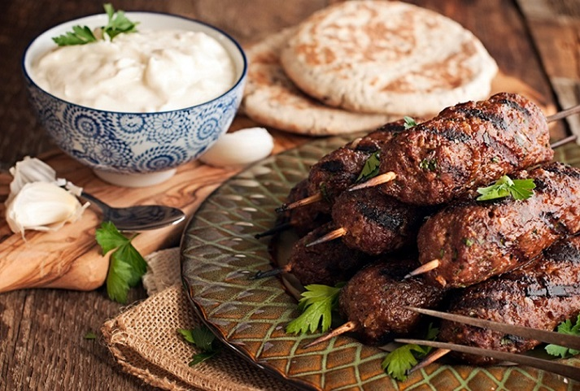

Khubz
This is the Arabic flatbread quite like the pita that you will find throughout the region, wherever you go. It is thick and traditionally baked in a tannur.

This is the Arabic flatbread quite like the pita that you will find throughout the region, wherever you go. It is thick and traditionally baked in a tannur.
The predecessor of the Indian kofta, the kefta is simply a grilled dish of ground meat like lamb or beef. It is mildly seasoned with paprika, parsley and sometimes onions and grilled like a seekh kebab.
Yoghurt is perhaps as popular in the Arab world as in India. The labneh is a creamier version with the water drained out.

Qahwa is a traditional Arabic Coffee Recipe that is most popular Arabian cuisine. Qahwa is made from green coffee beans and cardamom. It is often served with dates.